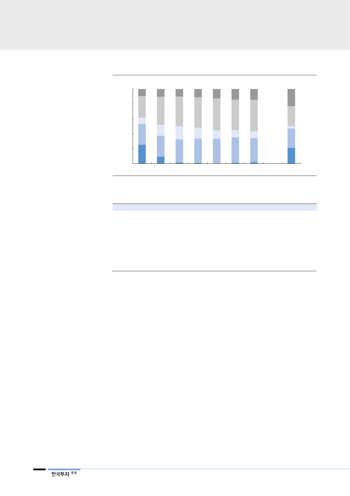

프랑스도 원전 쉽게
줄이지 못해
대만은 국민투표에서
탈원전 폐지를 결정
[그림 36] 일본은 2030년 원자력 비중을 2011년 사고 이전 수준으로 회복시킬 계획
(%)
100
80
60
40
20
0
2010 2011 2012 2013 2014 2015 2016
자료: 일본자원에너지청, 한국투자증권
재생
에너지
가스
석유
석탄
원자력
… 2030F
<표 7> 일본에서 현재 가동 중인 원전 현황
원전
센다이 #1
센다이 #2
다카하마 #3
다카하마 #4
이카타 #3
오이 #3
켄카이 #3
오이 #4
켄카이 #4
운영업체
규슈전력
규슈전력
간사이전력
간사이전력
시코쿠전력
간사이전력
규슈전력
간사이전력
규슈전력
자료: 산업자료, 한국투자증권
최초가동시기
1984년 7월
1985년 11월
1985년 1월
1985년 6월
1994년 12월
1991년 12월
1994년 3월
1993년 2월
1997년 7월
가동재개시기
2015년 8월
2015년 10월
2016년 1월
2016년 2월
2016년 8월
2018년 3월
2018년 3월
2018년 5월
2018년 6월
설비용량(MW)
890
890
870
870
890
1,180
1,180
1,180
1,180
원전 의존도가 75%로 세계에서 가장 높은 프랑스는 2025년까지 원자력 발전비
중을 50%로 낮출 계획이었다. 하지만 원자력에 우호적인 마크롱 대통령 당선 이
후 원전에 대한 위험성보다 기후변화에 따른 우려가 더 부각되고 있다. 이에 따라
원전 축소 정책을 유보하고 50% 달성시점을 5~10년 가량 늦출 방침이다. 지난
8월에는 원자력 발전에 강하게 반대해온 위로 환경부 장관이 탈핵에 주저하는 정
부에 반감을 표하고 자진사퇴함에 따라, 폐로 속도는 더욱 느려질 전망이다.
대만은 지난 11월 24일 실시된 국민투표를 통해 탈원전 정책의 폐지를 결정했다.
작년 대만의 차이잉원 정권은 2025년까지 모든 원전의 가동을 중단하는 법안을
통과시키고 전체 6기의 원전 중 4기를 중지시킨 바 있다. 하지만 같은해 8월 전
력부족에 따른 대규모 정전 사태를 겪으면서 에너지 정책에 대한 반대여론은 힘
을 얻어왔다. 결국 이번 국민투표에서 탈원전 조항을 폐지하는 안건에 대해 59.5%
가 찬성표를 던지며 현 정부의 에너지 정책은 2년 만에 원점으로 돌아가게 됐다.
18